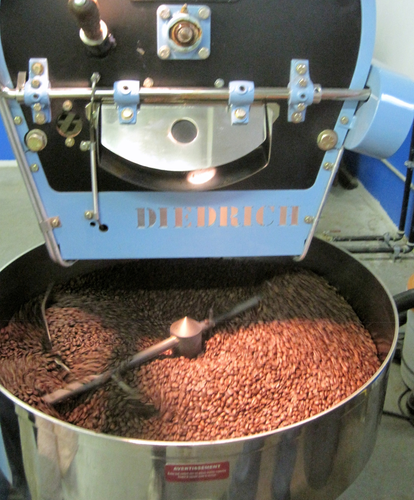
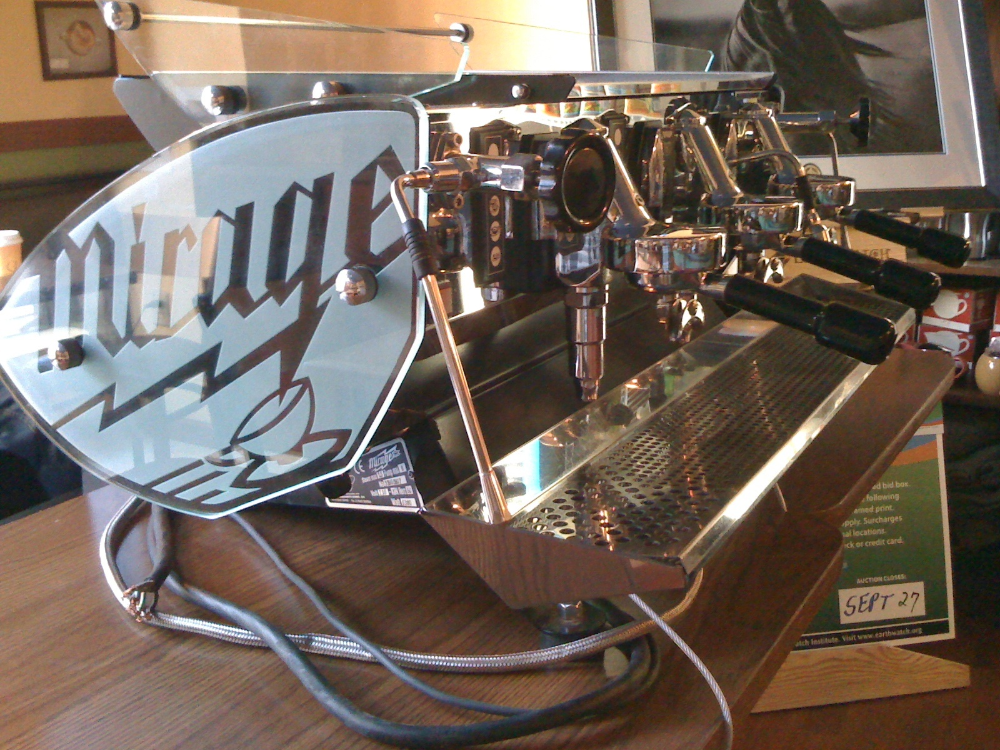

Slurp: More About Functions and Scope
Cafe Diplomatico in Toronto's Little Italy
Let Me Show You What To Do
let
Up to now, all we’ve really seen are anonymous functions, functions that don’t have a name. This feels very different from programming in most other languages, where the focus is on naming functions, methods, and procedures. Naming things is a critical part of programming, but all we’ve seen so far is how to name arguments.
There are other ways to name things in CoffeeScript, but before we learn some of those, let’s see how to use what we already have to name things. Let’s revisit a very simple example:
(diameter) ->
diameter * 3.14159265
What is this “3.14159265” number? Pi, obviously. We’d like to name it so that we can write something like:
(diameter) ->
diameter * Pi
In order to bind 3.14159265 to the name Pi, we’ll need a function with a parameter of Pi and an argument of 3.14159265:
((Pi) ->
???
)(3.14159265)
What do we put inside our new function that binds 3.14159265 to the name Pi when evaluated? Our circumference function, of course:
((Pi) ->
(diameter) ->
diameter * Pi
)(3.14159265)
This expression, when evaluated, returns a function that calculates circumferences. It differs from our original in that it names the constant Pi. Let’s test it:
((Pi) ->
(diameter) ->
diameter * Pi
)(3.14159265)(2)
#=> 6.2831853
That works! We can bind anything we want and use it in a function by wrapping the function in another function that is immediately invoked with the value we want to bind. This “functional programming pattern” was popularized in the Lisp programming language more than 50 years ago, where it is called let.9 Although CoffeeScript doesn’t have a let keyword, when we discuss this programming pattern we will call it let.
let works,10 but only a masochist would write programs this way in CoffeeScript. Besides all the extra characters, it suffers from a fundamental semantic problem: there is a big visual distance between the name Pi and the value 3.14159265 we bind to it. They should be closer. Is there another way?
Yes.
do
CoffeeScript programmers often wish to create a new environment and bind some values to names within it as let does. To make this easier to read and write, CoffeeScript provides some syntactic sugar called do.11
Italians seem to prefer espresso with plenty of sugar, while North Americans often drink it without
This is what our example looks like using do:
do (Pi = 3.14159265) ->
(diameter) ->
diameter * Pi
Much, MUCH cleaner.
If you need to create more than one binding, you separate them with commas:
do (republican = 'Romney', democrat = 'Obama') ->
democrat
 The value on the right side can be any expression. Try this for yourself:
The value on the right side can be any expression. Try this for yourself:
do (Pi = 3.14159265, diameter = (radius) -> radius * 2) ->
(radius) ->
diameter(radius) * Pi
Did you try the example above? Did you notice what we slipped in? Yes, obviously, the value of a binding can be any expression. But notice also that we can invoke a function on any expression evaluating to a function, including a variable that looks up a binding in the environment.
Making Things Easy
In CoffeeScript Ristretto, we are focusing on CoffeeScript’s semantics, the meaning of CoffeeScript programs. As we go along, we’re learning just enough CoffeeScript to understand the next concept simply and directly.
CoffeeScript actually supports a number of syntactic conveniences for making programs extremely readable, by which we mean, making them communicate their intent without asking the programmer to struggle in a Turing Tarpit, no matter how elegant.
if i were a rich man
For example, it is possible to implement boolean logic using functions, by carefully combining the Identity ((x) -> x), Kestrel ((x) -> (y) -> x), and Vireo ((x) -> (y) -> (z) -> z(x(y))) functions using a clever trick. It look something like this:
do (I = ((x) -> x),
K = ((x) -> (y) -> x),
V = ((x) -> (y) -> (z) -> z(x(y)))
) ->
do (t = K, f = K(I)) ->
# ...
# implement logical operators here
# ...
This is extraordinarily fascinating computer science stuff, but you can read about that elsewhere. CoffeeScript supplies true, false, and, or, and not so you don’t need to roll your own out of functions. But while we’re talking about logic, CoffeeScript also supplies conditional branches of execution, and we’ll use those in examples to come.
The syntax is remarkably simple. Here’s a conditional expression:
if d < 32 then 'freezing' else 'warm'
Since it’s an expression, you can put it in parentheses and stick it anywhere you like, including inside another conditional:
(d) ->
if d < 32 then 'solid' else if d < 212 then 'liquid' else 'gas'
Like function bodies, there is an indented form that can be more readable:
(d) ->
if d < 32
'solid'
else
if d < 212
'liquid'
else
'gas'
And the indented lines can have multiple expressions should you so desire:
if frobbish?
alert("Frobbish value: #{frobbish}")
snarglivate(frobbish)
frobbish
References, Identity, Arrays, and Objects
a simple question
Consider this code:
do (x = 'June 14, 1962') ->
do (y = x) ->
x is y
#=> true
This makes obvious sense, because we know that strings are a value type, so no matter what expression you use to derive the value ‘June 14, 1962’, you are going to get a string with the exact same identity.
But what about this code?
do (x = [2012, 6, 14]) ->
do (y = x) ->
x is y
#=> true
Also true, even though we know that every time we evaluate an expression such as [2012, 6, 14], we get a new array with a new identity. So what is happening in our environments?
arguments and references
In our discussion of closures, we said that environments bind values (like [2012, 6, 14]) to names (like x and y), and that when we use these names as expressions, the name evaluates as the value.
What this means is that when we write something like do (y = x) ->, the name x is looked up in the current environment, and its value is a specific array that was created when the expression [2012, 6, 14] was first evaluated. We then bind that exact same value to the name y in a new environment, and thus x and y are both bound to the exact same value, which is identical to itself.
The same thing happens with binding a variable through a more conventional means of applying a function to arguments:
do (x = [2012, 6, 14]) ->
((y) ->
x is y)(x)
#=> true
x and y both end up bound to the exact same array, not two different arrays that look the same to our eyes.
arguments and arrays
CoffeeScript provides two different kinds of containers for values. We’ve met one already, the array. Let’s see how it treats values and identities. For starters, we’ll learn how to extract a value from an array. We’ll start with a function that makes a new value with a unique identity every time we call it. We already know that every function we create is unique, so that’s what we’ll use:
do (unique = (() -> () ->)) ->
unique()
# => [Function]
unique() is unique()
# false
Let’s verify that what we said about references applies to functions as well as arrays:
do (x = unique()) ->
do (y = x) ->
x is y
#=> true
Ok. So what about things inside arrays? We know how to crate an array with something inside it:
[ unique() ]
#=> [ [Function] ]
That’s an array with one of our unique functions in it. How do we get something out of it?
do (a = [ 'hello' ]) ->
a[0]
#=> 'hello'
Cool, arrays work a lot like arrays in other languages and are zero-based. The trouble with this example is that strings are value types in CoffeeScript, so we have no idea whether a[0] always gives us the same value back like looking up a name in an environment, or whether it does some magic that tries to give us a new value.
Let’s test it:
do (unique = (() -> () ->)) ->
do (x = unique()) ->
do (a = [ x ]) ->
a[0] is x
#=> true
If we get a value out of an array using the [] suffix, it’s the exact same value with the same identity. Question: Does that apply to other locations in the array? Yes:
do (unique = (() -> () ->)) ->
do (x = unique(), y = unique(), z = unique()) ->
do (a = [ x, y, z ]) ->
a[0] is x and a[1] is y and a[2] is z
#=> true
references and objects
CoffeeScript also provides objects. The word “object” is loaded in programming circles, due to the widespread use of the term “object-oriented programming” that was coined by Alan Kay but has since come to mean many, many things to many different people.
In CoffeeScript, an object12 is a map from names to values, a lot like an environment. The most common syntax for creating an object is simple:
{ year: 2012, month: 6, day: 14 }
Two objects created this way have differing identities, just like arrays:
{ year: 2012, month: 6, day: 14 } is { year: 2012, month: 6, day: 14 }
#=> false
Objects use [] to access the values by name, but instead of using a plain name, we use a string:
{ year: 2012, month: 6, day: 14 }['day']
#=> 14
Values contained within an object work just like values contained within an array:
do (unique = (() -> () ->)) ->
do (x = unique(), y = unique(), z = unique()) ->
do (o = { a: x, b: y, c: z }) ->
o['a'] is x and o['b'] is y and o['c'] is z
#=> true
Names needn’t be alphanumeric strings. For anything else, enclose the label in quotes:
{ 'first name': 'reginald', 'last name': 'lewis' }['first name']
#=> 'reginald'
If the name is an alphanumeric string conforming to the same rules as names of variables, there’s a simplified syntax for accessing the values:
{ year: 2012, month: 6, day: 14 } is { year: 2012, month: 6, day: 14 }.day
#=> true
All containers can contain any value, including functions or other containers:
do ( Mathematics = { abs: (a) -> if a < 0 then -a else a }) ->
Mathematics.abs(-5)
#=> 5
Funny we should mention Mathematics. If you recall, CoffeeScript provides a global environment that contains some existing object that have handy functions you can use. One of them is called Math, and it contains functions for abs, max, min, and many others. SInce it is always available, you can use it in any environment provided you don’t shadow Math.
Math.abs(-5)
#=> 5
Summary: More About Functions And Scope

This summary is still being roasted to perfection. Thanks for your patience!
interlude…

A beautiful espresso machine
Michael Allen Smith on Ristretto:
“It must have been 1996. I was living in South Tampa at the time and the area finally got a great coffee house. The place was Jet City Espresso. Don’t go looking for it. It is no longer there. As the name implies, the owner Jessica was from Seattle and shared her coffee knowledge with her customers. After ordering numerous americanos and espressos, Jessica thought it was time I tried a ristretto. I expected the short pull of the espresso shot would result in a more bitter flavor. To my delight the shot was actually a sweeter and more intense version of her espresso blend.”